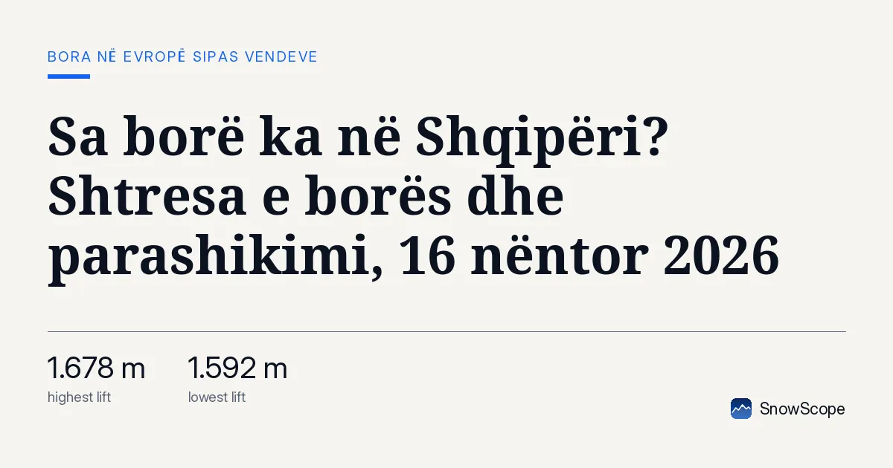

Parashikimi dyjavor i Shqipërisë: 9 cm që rritet në 22 cm
Malësia e Shqipërisë do të shohë përshpejtim të dëborës gjatë dy javëve të ardhshme. Java e parë sjell 9 cm; java e dytë e dyfishohet në 22 cm, megjithëse parashikimet e fillim sezoni kanë më shumë pasiguri se ato të dimrit.
Shihni parashikimin e borës për Ski Pista Bigëll në aplikacionin SnowScopeTrashësia e borës, njoftime dhe harta 3D, falas.
Perspektiva
Kontrasti është i mprehtë. Në javën e parë—20 deri 23 nëntor—modeli ynë pret 9 cm dëborë të freskët në malësinë shqiptare. Është modest, paqëndrueshëm mbi 2100 m lartësi, dhe vjen në një impuls të vetëm të ftohtë. Pastaj modeli ndryshon. Java e dytë, 24 deri 30 nëntor, tregon 22 cm—më shumë se dyfish. Atëherë sezoni fiton vrull.
Dita më e dëborshme duket se është e diel, 23 nëntor, me 9 cm. Kërcimi midis javëve pasqyron një ndryshim në sistemin e motit: java e parë është një shtytje e shkurtër; java e dytë është një model më i qëndrueshëm. Modeli tregon besim të arsyeshëm në këtë impuls të javës së dytë, megjithëse parashikimet e fillim nëntorit ende mund të ndryshojnë, prandaj ne mbajmë pritshmëritë reale.
| Qendra | Trashësia e borës | Borë e re, 72 orë | Ditët në vijim | Maja |
|---|---|---|---|---|
| Ski Pista Bigëll | 0 cm | 0 cm | 0 cm | 1.678 m |

Tre ditët e ardhshme
Nëse po e ndjekni parashikimin nga afër, duhet këmbëngulje. Tre ditët e ardhshme (deri 19 nëntor) sjellin pothuajse asnjë dëborë të re. Dëbora nuk fillon vërtet deri 20 nëntor—katër ditë nga tani.
Kur të arrihet, linja e dëborës do të jetë rreth 2100 m, kështu që pjesat më të ulëta qëndrojnë të thata. Mbajeni synim 20 nëntorin si pikën e hyrjes për sistemin e parë; aktiviteti vazhdon deri 23 nëntor, pastaj qetësohet para se vala e dytë të merr kontrollin rreth 24 nëntorit.
Prirja
Mbulesja e dëborës në Shqipëri rritet shpejt. Shtatë ditë më parë, vetëm 40 km² ishin të bardhë; dje, arriti në 60 km²; sot është 140 km². Ky është një rritje 3,5 herë në një javë. Shumica e kësaj rritjeje ndodh në malësinë e lartë, mbi 2000 m, veçanërisht në Alpet Shqiptare—zona e dallueshme, e cila mori 49 cm vetëm në 72 orët e fundit.
Mali i Korabit gjithashtu tregon 21 cm në atë periudhë. Pjesa e bardhë e vendit është ende vetëm 1%, por trajektorja e rritjes është e paqartë. Po nisemi nga pothuajse tokë e zhveshur, kështu që çdo sistem shton ndikim të dukshëm.
Ku ta gjeni
Në këtë moment, dëbora është e përqendruar në malësinë e lartë. Alpet Shqiptare janë në krye, të ndjekur nga Mali i Korabit. Këto zona morën dëborë të bollshme në tre ditët e fundit, ndërsa pjesat më të ulëta mbeten pothuajse të zhveshura.
Zona e skijimit në ultësirë, Ski Pista Bigëll në lartësi 1678 m, është ende në zero thellësi dhe ka të ngjarë të qëndrojë e tillë deri në javën e dytë, kur dëbora arrin në lartësi më të ulëta më me besueshmëri.
Sipas lartësisë
Lartësia kontrollon gjithçka në këtë moment. Nën 1500 m: asnjë dëborë. Midis 1500 dhe 2000 m: pothuajse asgjë, me vetëm 1% mbulim dhe thellësi pothuajse zero. Mbi 2000 m: dëbora fillon të ekzistojë. Në brezin 2000 deri 2500 m, 52% e terrenit mban një mesatare 2 cm.
Linja e dëborës ndodhet në 2100 m sot. Ndërsa java e dytë zhvillohet dhe më shumë sisteme kalojnë, ky model do të zhvendoset poshtë, por deri 24 nëntor, terreni në lartësi të madhe është ku është aksioni.
Këshilla për skiatorët
- Për katër ditët e ardhshme, nuk ka pothuajse asgjë për të kërkuar në lartësi më të ulëta. Mbajeni synim nga 20 nëntor kur sistemi i parë vjen.
- Alpet Shqiptare dhe Mali i Korabit janë udhëheqësit e dëborës tuaj dhe duhet të kapin akumulimin më të madh në të dyja javët. Synojeni altën nëse po planifikoni një udhëtim.
- Deri 24 nëntor, linja e dëborës ndodhet rreth 2100 m. Çdo vrap që keni mbi atë lartësi është zgjedhja më e mirë juaj.
- Dëbora në fillim të nëntorit tenton të jetë e hollë dhe mund të fshehë shkëmbinj nënpas. Gjithmonë kontrolloni bullentinin zyrtar të ortakeve të rrëzuar përpara se të shkini jashtë piste në malësinë e lartë.
- Nga 24 deri 30 nëntor, vala e dytë duhet të sjellë mbulim më të thelbësor në terrerin më të lartë, me deri 22 cm parashikime në të gjithë malësinë.
About these numbers
Resort snow depths are the deepest snow on the resort's upper slopes from the SnowScope snow model (about 1 km, run of 16 nëntor); they are estimates for an area, not a measurement at one point. Station values are measurements on the date shown. Forecasts can change. Always read the official avalanche bulletin before going off-piste.
Cite this report
For research, teaching or the press: the numbers and charts are free to reuse under CC BY 4.0 with this citation.
SnowScope (2026), Parashikimi dyjavor i Shqipërisë: 9 cm që rritet në 22 cm, https://snowscope.app/blog/sq/2026/11/albania-snow-report-16-november-2026.html, accessed 2026-11-16
SnowScope (Atlas Labs). (2026, November 16). Parashikimi dyjavor i Shqipërisë: 9 cm që rritet në 22 cm. SnowScope snow reports. https://snowscope.app/blog/sq/2026/11/albania-snow-report-16-november-2026.html
BibTeX
@misc{snowscope2026albaniasnowreport16novem,
author = {{SnowScope (Atlas Labs)}},
title = {Parashikimi dyjavor i Shqipërisë: 9 cm që rritet në 22 cm},
year = {2026},
month = nov,
howpublished = {\url{https://snowscope.app/blog/sq/2026/11/albania-snow-report-16-november-2026.html}},
note = {Published 2026-11-16 20:42 UTC; accessed 2026-11-16}
}· CC BY 4.0 · Methods, data and tools →
Ski Pista Bigëll: snow and temperature by height, this winter vs last (tools) →
Follow Ski Pista Bigëll
Falas: një mesazh kur vjen borë e re dhe parashikimi çdo mëngjes.